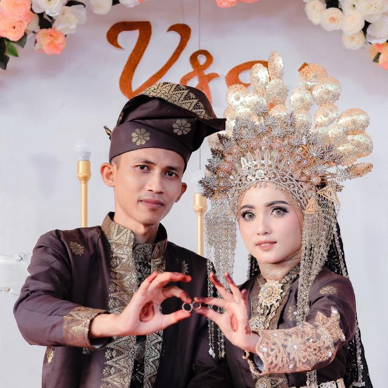

Pengertian Ekskul literasi digital :
Ekskul Literasi digital adalah kegiatan menggunakan media digital,
alat-alat komunikasi, atau jaringan dalam menemukan, mengevaluasi, menggunakan, membuat informasi, dan memanfaatkannya secara sehat, bijak, cerdas, cermat, tepat,
dan patuh hukum dalam rangka membina komunikasi dan interaksi dalam lingkungan sekolah atau kehidupan sehari-hari dan juga turut melaksanakan kerjasama dengan pihak STTI dalam bidang desain graphis
Kegiatan apa saja yang dilakukan apabila mengikuti akskul :
a. Belajar penggunanaan Komunikasi dengan guru atau teman menggunakan media sosial.
b. Belajar cara Mengirim tugas sekolah lewat e-mail atau aplikasi sejenisnya
c. Menemukan pembelajaran baru dengan cara online, yakni lewat aplikasi ataupun web
d. Mengadakan berbagai kegiatan yang berhubungan dengan informatika
3. Hal apa saja yang menarik ?
Hal yang menarik dari ekskul literasi digital adalah pengetahuan dalam mengunakan aplikasi digital serta pemanfaatannya dalam pembelajaran berbasi teknologi.4. Manfaat dari eksul literasi digital
a. Meningkatkan kemampuan individu untuk lebih kritis dalam berpikir serta memahami informasi.b. Meningkatkan kemampuan verbal individu.
c. Literasi digital dapat meningkatkan daya fokus serta konsentrasi individu.
d. Menambah kemampuan individu dalam membaca, merangkai kalimat serta menulis informasi yang berhubungan dengan penggunaan komunikasi online yang bersifat positif
e. Menambah wawasan individu dalam mengetahui, mana konten yang positif dan bermanfaat serta mana konten negatif.
GURU PEMBINA EKTRAKULIKULER LITERASI DIGITAL
BIODATA
Nama:URAY WIRA SYAHBANA
MATERI EKTRAKULIKULER
BELAJAR PIXELAB
Salah satu aplikasi yang dapat digunakan di literasi digital yaitu PixelLab.
PixelLab adalah sebuah aplikasi edit foto sederhana yang berfokus pada kombinasi foto dan teks, bisa foto saja, foto dihiasi teks atau teks saja.
Berdasarkan penelusuran Dailysocial, PixelLab hanya tersedia di platform Android
BELAJAR PHOTOSHOP

platform kami jga menggunakan Photoshop untuk mengdesain foto dan berbagai editing lainnya.
BELAJAR MEMBUAT SLIDE CANVA

Buka beranda canva dan telusuri konten yang anda minati
Masukin materi yang anda punya
Gunakan fitur yang terdapat didalam platform canva seperti sunting, font dan fitur lainnya
Ekspor jika sudah selesai dan dapatkan hasil yang menarik
BELAJAR MEMBUAT QR CODE DAN CHANNEL YOUTUBE
Membuat QR code dan menghubungkan ke chanel youtube
adalah salah satu cara mempermudah dan mempercepat pencarian chanel youtube